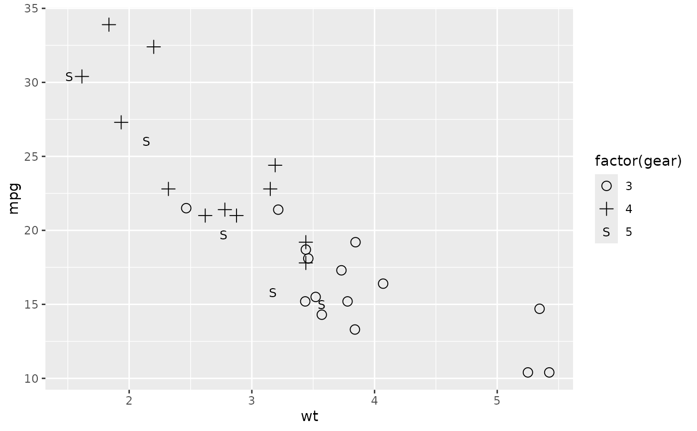
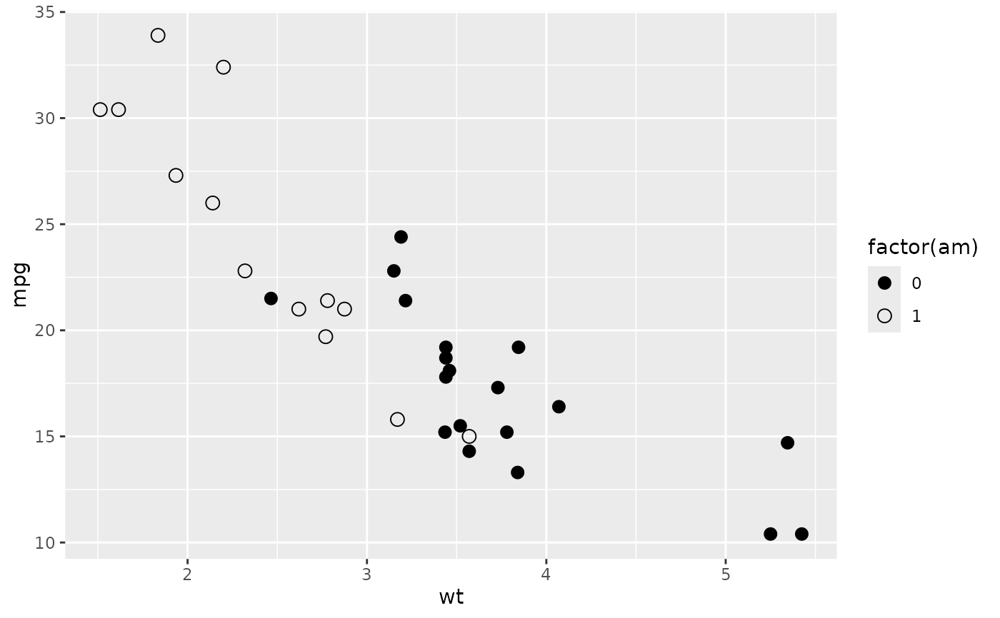

Shape palettes from Cleveland's "Elements of Graphing Data"
Source:R/shapes.R
cleveland_shape_pal.RdTwo sets of five plotting symbols from Figure 3.70 of Cleveland (1985): one for data with little overlap and one for data where overlap causes problems. Use each set from the left: the first two symbols for two categories, the first three for three, and so on.
Usage
cleveland_shape_pal(
overlap = TRUE,
unicode = NULL,
edition = c("1985", "1994")
)Arguments
- overlap
If
TRUE(the default), use the symbols for data where overlap causes problems: an open circle, a plus sign, an S, a triangle and a U. IfFALSE, use the symbols for data with little overlap: a solid circle, an open circle, a circle with a vertical line, a heavy ring, and a circled dot.- unicode
If
TRUE, return pch codes derived from Unicode glyphs, which exist for every shape of the palette. They are drawn by the device font, so they render as blank boxes in a font without coverage and at unrelated sizes in most fonts; the font fromregister_shapes_font()has the shapes of this palette at a common size. IfFALSE, return base pch codes, which every font can draw but which exist only for some shapes. The default depends on the palette.- edition
Which edition of the book to take the symbols from. One of:
"1985"(the default): the first edition, Figure 3.70."1994": the revised (second) edition.
Value
A palette function. It takes the number of shapes n and returns an integer vector of n
shape (pch) codes, and can be used as the palette argument of
ggplot2::discrete_scale().
Details
The symbols for overlapping data are curves and lines with no solid parts, so
that points drawn on top of each other keep their identity. All five have a
base pch code (the letters are drawn as characters), so with
unicode = FALSE they need no special font.
The two editions draw the sets differently. edition = "1985" has, for
overlapping data, an open circle, plus sign, S, triangle and U, and, for
little overlap, a solid circle, open circle, circle with a vertical line,
heavy ring and circled dot. edition = "1994" has an open circle, plus
sign, <, S and W for overlapping data, and an open circle, solid circle,
heavy ring, circle with a vertical line and circled dot for little overlap.
The symbols for little overlap vary how much of the circle is filled in.
Only the solid and the open circle have a base pch code, so with
unicode = FALSE, cleveland_shape_pal(overlap = FALSE) supports two
values; unicode = TRUE draws all five. The circle with a vertical line
(U+233D), the heavy ring (U+2B58) and the circled dot (U+2299) are missing
from many fonts and drawn at unrelated sizes in the rest, and even the plain
circles are drawn larger or smaller than base pch circles depending on the
font. The font that ships with ggthemes has them all at a common size; see
register_shapes_font() for how to use it.
Default of unicode
![[Deprecated]](figures/lifecycle-deprecated.svg)
unicode defaults to FALSE, as for the other shape palettes, but that
default will change to TRUE in ggthemes 9.0.0, so that both sets draw all
five symbols. Leaving unicode unset is deprecated; set it to keep the
current behaviour or to adopt the new one.
References
Cleveland WS (1985). The Elements of Graphing Data. Wadsworth Advanced Books and Software, Monterey, CA. Figure 3.70, p. 196.
Cleveland WS (1994). The Elements of Graphing Data. Revised Edition. Hobart Press, Summit, NJ, pp. 154-164, 234-239.
Cleveland WS, McGill R (1984). "The Many Faces of a Scatterplot." Journal of the American Statistical Association 79: 807-822. The book cites this paper for the evidence on discriminating circles by fill.
Examples
library(ggplot2)
# Base pch symbols, which every font can draw: five for data where overlap
# causes problems, and two (a solid and an open circle) for little overlap.
ggplot(mtcars, aes(x = wt, y = mpg, shape = factor(gear))) +
geom_point(size = 3) +
scale_shape_cleveland(unicode = FALSE)

ggplot(mtcars, aes(x = wt, y = mpg, shape = factor(am))) +
geom_point(size = 3) +
scale_shape_cleveland(overlap = FALSE, unicode = FALSE)

# unicode = TRUE draws all five symbols of either set with the device font.
# The font that ships with ggthemes gives them a common size. Register it and
# set its family on a grid viewport, for devices that read fonts through the
# systemfonts package, such as ragg. `cut` has five levels, one per symbol.
# geom_point_glyph() does the same with no viewport.
if (rlang::is_installed(c("systemfonts", "ragg")) && interactive()) {
family <- register_shapes_font()
diamonds_sample <- head(diamonds, 200)
p <- ggplot(diamonds_sample, aes(x = carat, y = price, shape = cut)) +
geom_point(size = 3) +
scale_shape_cleveland(overlap = FALSE, unicode = TRUE)
ragg::agg_png(tempfile(fileext = ".png"), width = 640, height = 480)
print(p, vp = grid::viewport(gp = grid::gpar(fontfamily = family)))
dev.off()
# The symbols of the revised (second) edition
p <- ggplot(diamonds_sample, aes(x = carat, y = price, shape = cut)) +
geom_point(size = 3) +
scale_shape_cleveland(unicode = TRUE, edition = "1994")
ragg::agg_png(tempfile(fileext = ".png"), width = 640, height = 480)
print(p, vp = grid::viewport(gp = grid::gpar(fontfamily = family)))
dev.off()
}